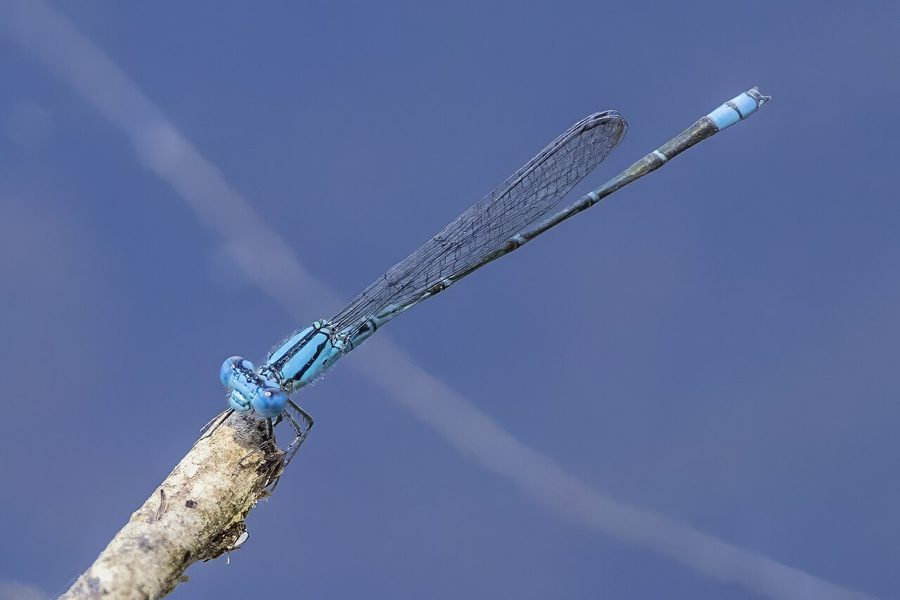

नीली व्याधपतंगBlue Dartlet
Pseudagrion microcephalum · Coenagrionidae · INS-0018

- Scientific name
- Pseudagrion microcephalum (Rambur, 1842)
- Family
- Coenagrionidae
- Hindi
- नीली व्याधपतंग
- Status here
- native
- IUCN
- LC
When to look कब देखें
Present all year.
नीली व्याधपतंग / Blue Dartlet
Pseudagrion microcephalum (Rambur, 1842) — Coenagrionidae
नीली व्याधपतंग — हमारे जलाशयों और नहरों के किनारे तैरते जलीय पौधों पर पाई जाने वाली एक छोटी, अत्यंत पतली और चमकीली आसमानी-नीली सुई जैसी सूतिका कीट (damselfly) है। यद्यपि इसे स्थानीय भाषा में व्याधपतंग कहा जाता है, यह असली व्याधपतंग (dragonfly) से भिन्न है; विश्राम करते समय यह अपने पंखों को शरीर के समानांतर बंद रखती है और इसकी आंखें सिर के दोनों किनारों पर अलग-अलग स्थित होती हैं। इसके वयस्क नर का पूरा शरीर चमकीला नीला और काला होता है, जबकि मादा का रंग फीका हरा-पीला होता है। यह जलीय पारिस्थितिकी तंत्र में साफ पानी की एक महत्वपूर्ण संकेतक प्रजाति है।
Quick Identification त्वरित पहचान
| Feature | Description |
|---|---|
| Size & Shape | Small, extremely slender body (body length 33–42 mm; wingspan 36–42 mm) |
| Damselfly Key | Unlike dragonflies, it holds its wings folded closed along the body at rest |
| Eyes | Widely separated on the sides of the head; do not meet at the top |
| Male Colour | Brilliant sky-blue head and thorax with black stripes; blue abdomen with black rings |
| Female Colour | Dull greenish-yellow or brown with dark markings |
| Behaviour | Flutters weakly close to the water surface, resting frequently on floating vegetation |
Field tip: Scan floating lily pads and lotus leaves. If you see a tiny, bright blue, needle-like insect fluttering weakly and resting with its wings closed along its back, it is the Blue Dartlet. Real dragonflies are larger and always rest with their wings spread wide open.
Morphology आकारिकी
Biometrics (typical measurements in the northern Indian plains):
| Measurement | Range |
|---|---|
| Body length | 33–42 mm |
| Hindwing length | 17–20 mm |
| Wing span | 36–42 mm (slender tandem) |
Adult description: The adult male has a bright blue face and large blue eyes with a black line. The thorax is sky-blue with a broad black mid-dorsal stripe and narrow humeral stripes. The abdomen is very long and slender, predominantly blue with black bands and markings at the joints. Segment 8 and 9 are almost entirely blue, while segment 10 has black markings. The female occurs in two forms: one resembling the male (andromorph) and the other a dull olive-green or orange-brown (heteromorph).
Vocalisations
Odonates do not possess vocal organs and cannot produce true vocalisations.
- Sound production: Wing-whirring sounds are produced by rapid wingbeats during territorial disputes, pursuit of prey, or courtship maneuvers. The wing-beat frequency is approximately 15–20 Hz.
Behaviour & Ecology व्यवहार और पारिस्थितिकी
As a water quality indicator, Pseudagrion microcephalum is a clean-water indicator. It is highly sensitive to chemical runoff and low dissolved oxygen levels. It requires healthy stands of floating and submerged macrophytes (like lotus and water lilies) for foraging and breeding.
Larval (Naiad) Stage
The larval stage is aquatic, very slender, and highly adapted to climbing submerged vegetation.
- Body form and breathing: The naiad is extremely slender, brown or light green, and lacks the rectal gills of dragonflies. Instead, it breathes through three leaf-like tracheal gills (caudal lamellae) located at the tip of the abdomen, which also assist in swimming via a fish-like tail wag.
- Habitat and duration: They live hidden in submerged aquatic weeds in clean ponds and slow-moving canals. The larval stage lasts for approximately 10–12 weeks.
- Emergence: The mature naiad climbs onto floating lily pads, lotus stems, or marginal grass blades during early morning hours to emerge as an adult.
Tandem Oviposition
This species displays a highly specialized breeding behavior called tandem oviposition:
- Tandem link: The male uses his anal appendages (claspers) at the tip of his abdomen to grasp the female by the prothorax (neck).
- Egg-laying: While linked together in tandem, the pair flies to floating plants. The female uses her sharp ovipositor to cut slits in aquatic plant tissues and insert her eggs (endophytic oviposition). The male remains vertically clasped to her, guarding her from rival males and predators during this vulnerable process.
Life Cycle / Phenology जीवन चक्र
- Egg: Embedded inside tissues of floating plants (water lilies, pondweeds).
- Larva: Slender, green-brown, feeds in clean weeds.
- Emergence: Peak emergence occurs from March to May and again after the monsoon (September to November).
- Adult lifespan: Approximately 3–4 weeks.
- Seasonality: Present year-round, with high activity during spring and post-monsoon months.
Host Plants or Prey आहार
Prey (adults):
- Small midges and gnats
- Aphids and small leafhoppers
- Mosquitoes
Prey (larvae):
- Mosquito larvae
- Small water fleas (Daphnia)
- Small aquatic worm segments
Predators / Natural Enemies शत्रु
- Birds: Swallows, wagtails, and small kingfishers.
- Fish: Small surface-feeding fish (such as barbs and murrel fry).
- Spiders: Tetragnathid spiders (long-jawed orb-weavers) at the water's edge.
Agricultural / Human Relevance कृषि प्रासंगिकता
Pest controller. They consume agricultural pests like aphids, jassids, and leafhoppers that populate weeds near irrigation canals. They serve as excellent bio-indicators for farmers; their presence indicates that the irrigation water is free from highly toxic levels of chemical pesticides.
Expected Locally स्थानीय रूप से अपेक्षित
Not a field record. Written from published accounts for eastern Uttar Pradesh. No confirmed local sighting yet — if you have seen it, that is what the atlas needs.
अभी तक स्थानीय पुष्टि नहीं। यह विवरण प्रकाशित स्रोतों से है, किसी अवलोकन से नहीं।
Commonly observed on the village ponds (talab) in Basti district, especially where lotus (Nelumbo nucifera) and water lilies (Nymphaea nouchali) are cultivated. They can be seen in dozens flying low over the leaf surface, forming tandem pairs that look like double-headed blue needles. They are immediately lost to sight if the pond is cleared of vegetation.
Distribution वितरण
Global range: Widespread across South and East Asia, and parts of Australasia, from Pakistan, India, Sri Lanka, Nepal, and Bangladesh to China, Japan, the Philippines, and Australia.
In India: Widespread in plains and wetland regions.
In Uttar Pradesh: Common in unpolluted canal and pond systems.
In Basti district / eastern UP: Highly common in permanent wetlands and clean village ponds.
Research Questions शोध प्रश्न
Anyone can investigate these | कोई भी इन प्रश्नों की जाँच कर सकता है
- How does the presence of floating plant leaves affect the population density of Blue Dartlets? — Compare counts on vegetated ponds vs. cleared ponds.
- What is the average time a tandem pair spends in egg-laying before separating? — Observe and time pairs during oviposition.
- Do fish actively hunt adult damselflies when they land on floating leaves? — Record fish attack events during oviposition.
- How do males defend their partners from rival males during tandem flights? — Document interactions and attempts by other males to split the pair.
- How does water turbidity affect the visual hunting success of Blue Dartlets? / पानी का गंदलापन नीली व्याधपतंग की शिकार करने की क्षमता को कैसे प्रभावित करता है? — Compare catch rates in muddy vs. clear water pools.
Similar Species मिलती-जुलती प्रजातियाँ
| Species | Key Difference |
|---|---|
| Ischnura aurora | Much smaller (25 mm); abdomen is bright orange-yellow with a blue tip; highly tolerant |
| Ceriagrion coromandelianum | Bright citron-yellow body; larger; lacks blue and black patterns |
| INS-0019 Scarlet Skimmer | Dragonfly; much larger; bright red; rests with wings spread wide open; eyes meet at top |
| INS-0002 Wandering Glider | Dragonfly; large golden-yellow body; continuous gliding flight; wings spread wide |
Field rule: Slender, needle-like sky-blue body in males with black rings, wings held folded closed along the back at rest, and widely separated eyes confirm the Blue Dartlet.
Taxonomy & Classification वर्गीकरण
Original description. Jules Pierre Rambur described the Blue Dartlet as Agrion microcephalum in 1842 in his work Histoire Naturelle des Insectes. Névroptères (p. 259). The type locality was Bombay, India. The genus name Pseudagrion was established by Edmond de Selys Longchamps in 1876, meaning "false Agrion", and the specific name microcephalum is derived from the Greek meaning "small-headed".
Subspecies. Monotypic.
Family and order placement. Placed in the family Coenagrionidae (pond damselflies), suborder Zygoptera, order Odonata. Coenagrionidae is the largest damselfly family.
Phylogenetic notes. The genus Pseudagrion is highly diverse in Africa and Asia. They represent a successful radiation of damselflies specialized in using floating aquatic vegetation.
IUCN status rationale. Listed as Least Concern (LC). The species has a massive range and stable global populations, although localized clearing of wetland vegetation directly reduces their local presence.
Photo Gallery फोटो गैलरी
References संदर्भ
- Rambur, M.P. (1842). Histoire Naturelle des Insectes. Névroptères. Roret, Paris, p. 259. [original description]
- Fraser, F.C. (1933). The Fauna of British India, including Ceylon and Burma. Odonata. Vol. 1. Taylor and Francis, London.
- Prasad, M. & Varshney, R.K. (1995). A checklist of the Odonata of India. Oriental Insects, 29(1), 385-428.
- Mitra, T.R. (2002). Geographical distribution of Odonata (Insecta) of Eastern India. Zoological Survey of India, Kolkata.
- IUCN SSC Odonata Specialist Group. (2024). Pseudagrion microcephalum. IUCN Red List of Threatened Species. Ver. 2024.
- GBIF Occurrence Data — Pseudagrion microcephalum, Uttar Pradesh (2010–2025).
Source file: species/fauna/insects/blue_dartlet.md